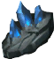

Открыть в интерактивной вики →
| Требуемый уровень | 35 |
|---|---|
| Редкость | Рар |
| Улучшения | звёзды, осколки |
| Тип | Доспехи питомца |
| Цена | 950 000 |
| Ремонт | 250к+ |
| Сила | 7 |
| Здоровье | 90 |
| Выносливость | 40 |
| Сопр. рубящим | 15 |
| Сопр. дробящим | 15 |
| Сопр. колющим | 15 |
| Вес | 0 |
Описание
| Сырьё для инкрустации снаряжения. |
Способы получения
|